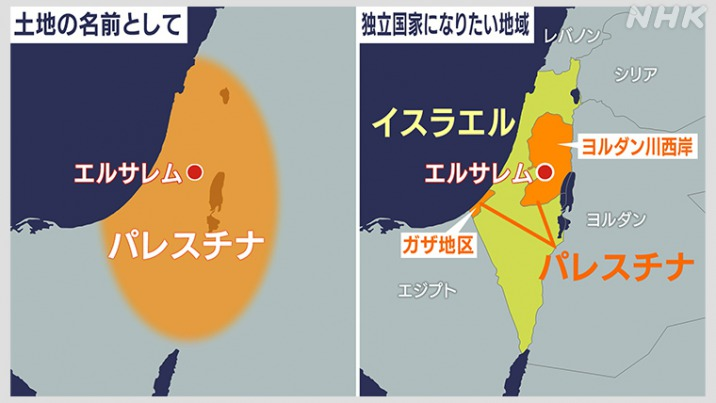
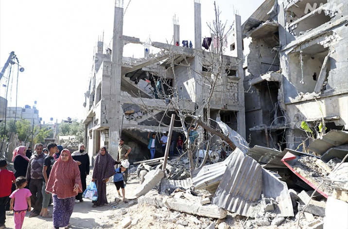

国際的なニュース
イスラエル・パレスチナ
日本では銃を使った戦争など起こることはありません。しかし、いまだに武力衝突、爆発テロ、空爆、民間人の犠牲...そんなニュースがとても多いイスラエルとパレスチナ。日本では起こらない出来事であるからこそ知らなければいけないと思った。
そもそも地中海の一番、東の沿岸にある地域のことを「パレスチナ」とよんでいます。南にエジプト、東にヨルダンがあって、北にはシリアやレバノンがある場所です。また、パレスチナのエルサレムには、ユダヤ教、キリスト教、イスラム教、それぞれの聖地があります。宗教上とても重要な地域です。
2つの悲劇
一つ目はユダヤ人が2000年の長い歴史のなかで世界に離散し、迫害を受けてきた悲劇です。やっとの思いでイスラエル（悲願の国）を作り、それを死守したい、二度と自分たちが迫害されるような歴史に戻りたくない。そんな、強い思いをユダヤ人はもっています。
もう一つは、パレスチナの地に根を下ろしていた70万人が、イスラエルの建国で故郷を追われたという、パレスチナ人の悲劇です。離散したユダヤ人が戻って行くことで今度はパレスチナ人が離散しました。いまパレスチナ人が住んでいるのは、ヨルダン川西岸とガザ地区という所です。国にはなれずイスラエルの占領下におかれています。
ガザ地区は日本の種子島ほどの面積に約200万人が住んでいます。ものすごく人口密度が高い。高い塀やフェンスで囲まれ、人やモノの厳しい封鎖が続いていることから「天井のない監獄」とも呼ばれています。
